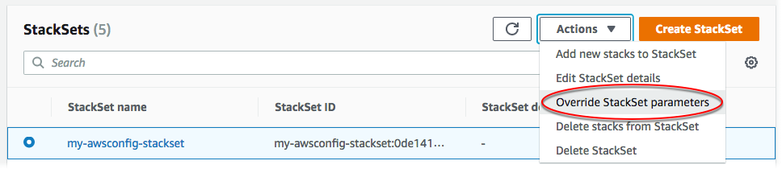

覆盖堆栈实例上的参数
在某些情况下，您可能希望特定区域或账户中堆栈实例的属性值与堆栈集中指定的属性值不同。例如，您可能希望根据账户是用于开发还是生产来为给定参数指定不同的值。对于这些情况，AWS CloudFormation 允许您按账户和区域覆盖堆栈实例中的参数值。您可在首次创建堆栈实例时覆盖模板参数值，并且可覆盖现有堆栈实例的参数值。您只能将之前在堆栈实例中覆盖的参数设置回在堆栈集中指定的值。
参数值覆盖适用于您选择的账户和区域中的堆栈实例。堆栈集更新期间，不会更新为堆栈实例覆盖的任何参数值，但保留其覆盖值。
您只能覆盖在堆栈集中指定的参数值；要添加或删除参数本身，您需要更新堆栈集模板。如果将参数添加到堆栈集模板，则必须先使用堆栈集中指定的新参数和值更新所有堆栈实例，然后才能覆盖堆栈实例中的参数值。使用新参数更新所有堆栈实例后，您可按需覆盖各个堆栈实例中的参数值。
要了解在创建堆栈实例时如何覆盖堆栈集参数值，请参阅将堆栈添加到堆栈集。
使用 AWS Management Console覆盖堆栈实例上的参数
打开 AWS CloudFormation 控制台，地址：https://console.aws.amazon.com/cloudformation
。 -
从导航窗格中，选择 StackSets (堆栈集)。在 StackSets（堆栈集）页面上，选择您在 创建堆栈集 中创建的堆栈集。在该演练中，我们创建了一个名为
my-awsconfig-stackset的堆栈集。 -
选定堆栈集后，请从 Actions（操作）菜单中选择 Override StackSet parameters（覆盖堆栈集参数）。
 -
在 Set deployment options (设置部署选项) 页面上，提供要覆盖其参数的堆栈实例的账户和区域。
AWS CloudFormation 将在第一个区域内的指定账户中部署堆栈，然后移到下一个区域，依此类推，前提是区域的部署失败不超过指定的容错能力。
-
[自行管理权限] 对于 Deployment targets (部署目标)，选择 Deploy stacks in accounts (在账户中部署堆栈)。粘贴用于在 创建堆栈集 中创建堆栈集的部分或所有目标账户 ID。
[服务托管权限] 对于 Deployment targets (部署目标)，请选择您组织中的、要向其部署的账户。
-
对于 Deployment regions (部署区域)，添加已在其中为此堆栈集部署堆栈实例的一个或多个区域。
如果您添加多个区域，Specify regions (指定区域) 下的区域顺序决定其部署顺序。
-
对于 Deployment options (部署选项)：
-
对于 Maximum concurrent accounts (最大并发账户数)，请保留 Number (数量) 和 1 的默认值。
这意味着，AWS CloudFormation 一次仅在一个账户中部署您的堆栈。
-
对于 Failure tolerance (容错)，请保留 Number (数量) 和 0 的默认值。
这意味着，只要您指定区域之一中有一个堆栈部署失败，AWS CloudFormation 就会停止当前区域中的部署并取消剩余区域中的部署。
选择下一步。
-
-
-
在 Specify Overrides（指定覆盖）页面上，检查 Frequency（频率）参数，然后从 Edit override value（编辑覆盖值）菜单中选择 Override StackSet value（覆盖堆栈集值）。

-
在 Override StackSet parameter values（覆盖堆栈集参数值）中，为 Frequency（频率）参数选择 6hours（6 小时），然后选择 Save changes（保存更改）。您将指示 AWS CloudFormation 覆盖 Frequency (频率) 参数值，并将 6hours (6 小时) 用于指定区域中指定账户的所有堆栈实例。选择下一步。
注意
要将任何覆盖参数设置回使用在堆栈中指定的值，请检查所有参数，然后从 Edit override value（编辑覆盖值）菜单中选择 Set to StackSet value（设置为堆栈集值）。这样做将在您更新堆栈实例后删除所有覆盖值。
-
在审核页面上，审核您的选择。请注意，频率参数会在 Override value (覆盖值) 列中显示其值，这表示该值已在堆栈级别覆盖。
在覆盖这些堆栈实例的参数之前，您必须先选中功能区域中的复选框，以确认您使用堆栈集创建的某些资源可能需要新的 IAM 资源和权限。有关可能需要的权限的更多信息，请参阅本指南中的确认 AWS CloudFormation 模板中的 IAM 资源。如果您准备就绪，请选择 Submit（提交）。
-
AWS CloudFormation 开始更新您的堆栈实例。在选择 Submit (提交) 时打开的堆栈集详细信息页面中查看堆栈实例的进度和状态。
使用 AWS CLI覆盖堆栈实例上的参数
担任委托管理员时，您必须在每次运行 StackSets 命令时将 --call-as 参数设置为 DELEGATED_ADMIN。
--call-asDELEGATED_ADMIN
运行 update-stack-instances AWS CLI 命令，并指定 --parameter-overrides。有关指定 --parameter-overrides 的更多信息，请参阅《AWS CloudFormation API 参考》中的 Parameter 以及《AWS CLI 命令参考》中的 update-stack-instances。
在此处显示的示例命令中，我们为指定堆栈实例将传输通道配置的默认快照传输频率从 TwentyFour_Hours 更改为 Twelve_Hours。
-
运行以下命令。对于
--stack-set-name，指定堆栈集名称my-awsconfig-stackset。通过在
FailureToleranceCount参数中将0设置为MaxConcurrentCount以及将1设置为--operation-preferences来设置容错能力和最大并发账户数，如以下示例中所示。要改为应用百分比，请使用FailureTolerancePercentage或MaxConcurrentPercentage。在本演练中，我们使用计数而不是百分比。注意
MaxConcurrentCount的值依赖于FailureToleranceCount的值。MaxConcurrentCount最多比FailureToleranceCount多 1。[自行管理权限] 提供您要为其覆盖堆栈实例上的参数值的账户 ID。
aws cloudformation update-stack-instances --stack-set-namemy-awsconfig-stackset--parameter-overrides ParameterKey=MaximumExecutionFrequency,ParameterValue=TwentyFour_Hours\\,Twelve_Hours--operation-preferencesFailureToleranceCount=0,MaxConcurrentCount=1--accounts '["012345678901"]' --regions '["eu-west-1", "us-west-2"]'[服务托管权限] 提供您要为其覆盖堆栈实例中参数的组织根 ID、OU ID 或 AWS Organizations 账户 ID。在此示例中，我们使用
ou-rcuk-1x5j1lwoID 覆盖 OU 中所有账户中堆栈实例的参数值。覆盖的参数值仅适用于当前位于目标 OU 及其子 OU 中的账户。将来添加到目标 OU 及其子 OU 的账户将使用堆栈集默认值，而不是覆盖的值。
aws cloudformation update-stack-instances --stack-set-namemy-awsconfig-stackset--parameter-overrides ParameterKey=MaximumExecutionFrequency,ParameterValue=TwentyFour_Hours\\,Twelve_Hours--operation-preferencesFailureToleranceCount=0,MaxConcurrentCount=1--deployment-targets OrganizationalUnitIds='["ou-rcuk-1x5j1lwo"]' --regions '["eu-west-1", "us-west-2"]' -
通过运行
describe-stack-set-operation命令来显示更新操作的状态和结果，验证您的参数值是否已成功覆盖堆栈实例。对于--operation-id，使用由您的update-stack-instances命令返回的操作 ID。aws cloudformation describe-stack-set-operation --operation-idoperation_ID